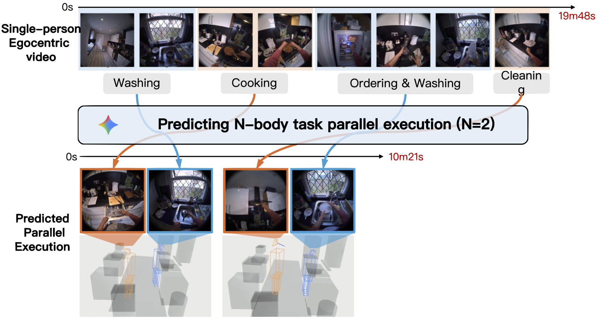

Abstract
Humans can intuitively parallelise complex activities, but can a model learn this from observing a single person? Given one egocentric video, we introduce the N-Body Problem: how N individuals, can hypothetically perform the same set of tasks observed in this video. The goal is to maximise speed-up, but naive assignment of video segments to individuals often violates real-world constraints, leading to physically impossible scenarios like two people using the same object or occupying the same space. To address this, we formalise the N-Body Problem and propose a suite of metrics to evaluate both performance (speed-up, task coverage) and feasibility (spatial collisions, object conflicts and causal constraints). We then introduce a structured prompting strategy that guides a Vision-Language Model (VLM) to reason about the 3D environment, object usage, and temporal dependencies to produce a viable parallel execution. On 100 videos from EPIC-Kitchens and HD-EPIC, our method for N = 2 boosts action coverage by 45% over a baseline prompt for Gemini 2.5 Pro, while simultaneously slashing collision rates, object and causal conflicts by 55%, 45% and 55% respectively.
Interactive Demo
Single-Person Video
Parallel Execution (N=2)
Video Demo
Citation
@misc{zhu2025nbody,
title={The N-Body Problem: Parallel Execution from Single-Person Egocentric Video},
author={Zhu, Zhifan and Huang, Yifei and Sato, Yoichi and Damen, Dima},
booktitle={arxiv},
year={2025}
}